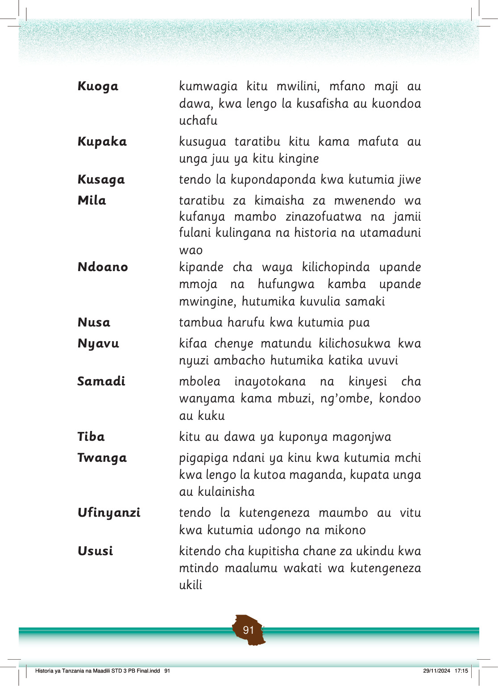

Kuoga
kumwagia kitu mwilini, mfano maji au dawa, kwa lengo la kusafisha au kuondoa uchafu
Kupaka
kusugua taratibu kitu kama mafuta au unga juu ya kitu kingine
Kusaga
tendo la kupondaponda kwa kutumia jiwe
Mila
taratibu za kimaisha za mwenendo wa kufanya mambo zinazofuatwa na jamii fulani kulingana na historia na utamaduni wao
Ndoano
kipande cha waya kilichopinda upande mmoja na hufungwa kamba upande mwingine, hutumika kuvulia samaki
Nusa
tambua harufu kwa kutumia pua
Nyavu
kifaa chenye matundu kilichosukwa kwa nyuzi ambacho hutumika katika uvuvi
Samadi
mbolea inayotokana na kinyesi cha wanyama kama mbuzi, ng’ombe, kondoo au kuku
Tiba
kitu au dawa ya kuponya magonjwa
Twanga
pigapiga ndani ya kinu kwa kutumia mchi kwa lengo la kutoa maganda, kupata unga au kulainisha
Ufinyanzi
tendo la kutengeneza maumbo au vitu kwa kutumia udongo na mikono
Ususi
kitendo cha kupitisha chane za ukindu kwa mtindo maalumu wakati wa kutengeneza ukili
Historia ya Tanzania na Maadili STD 3 PB Final.indd 91
29/11/2024 17:15